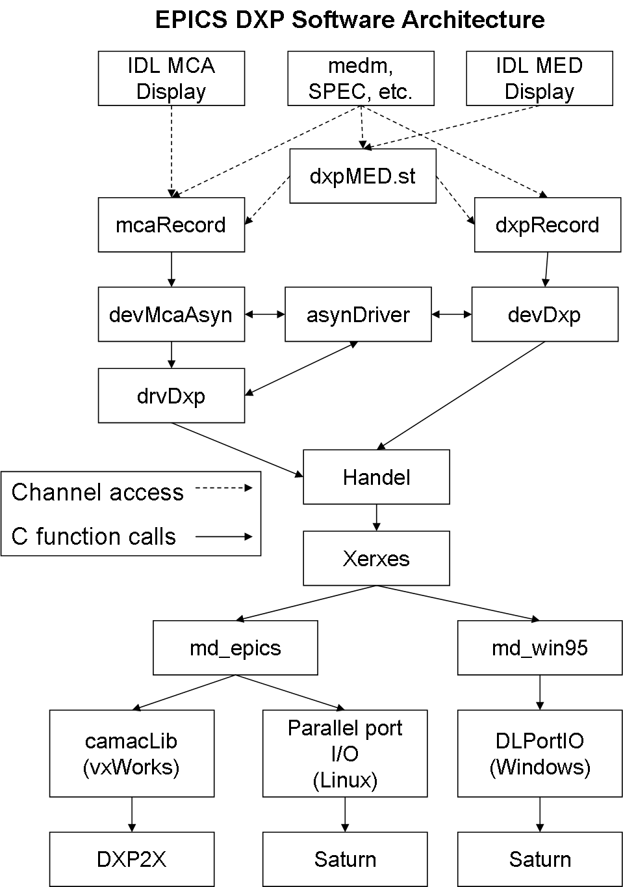

DXP - EPICS software for XIA Digital Signal Processing Systems
Mark Rivers
Contents
The EPICS DXP module provides support for the
digital signal processor based multichannel analyzers from
X-ray Instrumentation Associates (XIA).
DXP currently supports the following hardware
- The Saturn, which is a standalone desktop unit that communicates over the PC
Enhanced Parallel Port (EPP) or USB port. It contains the equivalent
electronics of the shaping amplifier, ADC and MCA of a
conventional pulse-height analysis system. The Vortex detector from Radiant
is an OEM version of the Saturn, and it also works with this software.
- The DXP2X, which is a single-width CAMAC module. Each module contains 2 or 4
channels with the same pulse-processing electronics as the Saturn.
- As soon as XIA releases the new PXI DXP-XMAP hardware, support
for that will be provided.
DXP currently supports this hardware under the following operating systems and
interfaces:
- The Saturn with the EPICS IOC running on Windows, using the EPP parallel port.
- The Saturn with the EPICS IOC running on Linux, using the EPP parallel port.
- The DXP2X with the EPICS IOC running on vxWorks, using the Kinetic Systems
2917/3922 VME to CAMAC interface. Other CAMAC interfaces that have software
support for the ESONE standard CAMAC library calls should also work,
but have not been tested.
The features of the EPICS software, compared with software available from XIA are:
- Control and data acquisition are available over the network, from any application or language
that supports the EPICS channel access protocol (based on TCP/IP).
This means that EPICS clients written
in languages like IDL, LabView, Visual Basic, etc. can control the DXP modules and read the data.
These applications can be running on any computer on the Internet, they do not need to run on the
computer that is attached to the XIA hardware. This client/server model is very
desirable in complex data acquisition environments, such as synchrotron
beamlines, because it allows the DXP control and data acquisition to be integrated with other
hardware and software. For example, a control software program can move a motor, command the DXP to
acquire data, and write the data to disk.
- A single software package supports the Saturn, the DXP2X, and soon the DXP-XMAP PCI hardware.
- The Saturn can be run from Windows and Linux, while the XIA Kepler program only runs on Windows.
- The DXP2X support uses the new XIA Handel library, while the XIA MESA package uses an old LabView
interface
The software consists of the following components:
- An
asyn server
that provides support for the
EPICS MCA record
via the asyn MCA device support. This permits each channel of the DXP to
be connected to an MCA record identically with other supported MCA hardware,
such as the Canberra AIM. The MCA record is used to control data acquisition and to acquire
spectra or regions of interest.
- A
EPICS DXP record.
record that is used to set all of the many software
selectable parameters for the DXP, including peaking times, pileup rejection
criteria, etc. The DXP record is also used to acquire diagnostic data, such as the baseline histogram
and ADC trace.
- Databases for single-element and multi-element detector systems.
- medm display screens for single-element and multi-element detector systems.
- A State Notation Language program for synchronizing acquisition and DXP parameters
in multi-element detector systems.
- Example IOC boot directories for the Saturn on Windows and Linux, and for a 16 element detector
with the DXP2X on vxWorks.
To install the EPICS DXP software with a Saturn on a Windows or Linux computer do the following:
- Configure the parallel port to be in EPP mode. This requires entering the BIOS setup screen
on the computer before the operating system boots. The menus will differ from one computer to
another, but it is necessary to set the parallel port to EPP mode. Other modes will not work.
- Decide whether you want to build the EPICS DXP software from source code, or install the pre-built
binaries.
Most users will just download the pre-built binaries. The Windows binaries
should run on almost any version of Windows. Windows XP and Windows 2000 have been tested.
The Linux binaries are built with Redhat 3.2.2-5 (WS) and gcc version 3.2.2. These binaries
should run on many recent versions of Linux, but this has not been extensively tested.
Building from the source code requires downloading
EPICS base
and all of the required
synApps components.
In addition, to build from source code on
Windows requires the gcc, g++, perl and make packages from Cygwin. It is beyond the scope of
this document to describe how to build the source code. Consult other EPICS documentation
for this.
To use the EPICS DXP software with a Saturn on a Windows PC do the following:
- Install the basic
Cygwin package.
Cygwin is a public domain package that provides Unix-like
programming libraries and commands on Windows. The EPICS DXP software is built with the
Cygwin libraries, and Cygwin must be installed on the PC to run it. Note that Cygwin claims
that it is only necessary to copy the cygwin1.dll file onto your PC, and have that in the
PATH. We have tried to do this, and although the EPICS software "runs" without error, it
is flaky with file I/O in the multi-threaded application. So for now at least, install
Cygwin. When using the Cygwin install program use all of the default settings, which will
install just the basic package into C:\Cywgin.
- Install the
Windows Port IO Driver
from Scientific Software Tools. This is a software driver
that lets Windows applications communicate with I/O ports, including the Enhanced Parallel Port.
- If you want to run the medm display program on the Windows PC, which is recommended in most cases,
you need to install
Exceed.
Exceed is a commercial X-Windows package from Hummingbird. After
installing Exceed you need to install the
EPICS Win32 Extensions,
which contain medm. Note that medm may work with non-commercial versions of X windows servers for
Windows, but Exceed is the only package that is guaranteed to work.
- Download
dxpStandalone.tar.gz,
which is the latest release of the EPICS DXP software, containing binaries for Windows.
- Unpack that distribution into a directory such as C:\EPICS or C:\Program Files\EPICS.
The distribution file, dxpStandlone.tar.gz can be unpacked using WinZip, or with the gunzip and
tar utilities that come with Cygwin. To use the Cygwin tools:
$ cd /cygdrive/c/epics # Or wherever you have chosen to put the EPICS software
$ gunzip dxpStandalone.tar.gz # Convert dxpStandalone.tar.gz to dxpStandalone.tar
$ tar xvf dxpStandalone.tar # Unpack the tar file.
- Make sure that the .fdd and .ini files in dxp/iocBoot/iocSaturn/ have Unix-type line terminators.
This can be done by running the Cygwin bash shell and typing
$ cd dxp/iocBoot/iocSaturn
$ dos2unix *.fdd *ini
This is necessary because these files may have Windows line
terminators, depending on how they were unpacked from the distribution.
- Make sure that the .bat files in dxp/iocBoot/iocSaturn/ have execute permission.
This can be done by running the Cygwin bash shell and typing
$ cd dxp/iocBoot/iocSaturn
$ chmod +x *.bat
This is necessary because these files may not have this permission, depending on how they
were unpacked from the distribution.
- If you look at those batch files, you will see a line that temporarily sets the environment variable
EPICS_DISPLAY_PATH using a relative path. You may want to set this permanently to an absolute path:
c:\epics\dxp\dxpApp\op\adl;c:\epics\mca\mcaApp\op\adl;c:\epics\autosave\asApp\op\adl
To set the environment variable use the
Windows Control Panel/System/Advanced/Environment Variables. Modify the definition
according to where you have installed the DXP application.
- If you look at that batch file, you will see a line that temporarily sets the environment variable
PATH to C:\cygwin\bin. You may want to add this directory permanently to your Windows path for
Windows shells. Again,
use the Windows Control Panel/System/Advanced/Environment Variables.
Modify the definition according to where you have installed Cygwin. Note that the PATH will be
set to automatically include that directory when running the Cygwin bash shell.
To use the EPICS DXP software with a Saturn on a Linux computer do the following:
- Download
dxpStandalone.tar.gz,
which is the latest release of the EPICS DXP software, containing binaries for Linux.
- Unpack that distribution into a directory such as /usr/local/epics.
The distribution file, dxpStandlone.tar.gz can be unpacked using the Linux gunzip and tar utilities.
- Make sure that the .fdd and .ini files in dxp/iocBoot/iocSaturn/ have Unix-type line terminators.
This can be done by typing
> cd dxp/iocBoot/iocSaturn
> dos2unix *.fdd *ini
This is necessary because these files may have Windows line
terminators, depending on how they were unpacked from the distribution.
- Access to the EPP I/O port on Linux requires root privilege.
This can be done in any of following 3 ways:
- Prefered method. The EPICS DXP software on Linux contains a program called startWithIopl3.
This program calls iopl(3) as root, and then reverts back to the non-root account
to run dxpApp. To use this method the application startWithIopl3 must be installed
as suid root. Do this as follows:
> cd dxp/bin/linux-x86
> su root
(password)
> chmod +s startWithIopl3
> exit
The dxpApp application can then be run without root privilege as follows:
> cd dxp/iocBoot/iocSaturn
> ../../bin/linux-x86/startWithIopl3 ../../bin/linux-x86/dxpApp st.cmd
You can also copy startWithIopl3 to a directory like /usr/local/bin or ~/bin that is in
your PATH. That way it can be run without having to specify the path.
- Not as good. Install the dxpApp application as suid root. Do this as follows:
> cd dxp/bin/linux-x86
> su root
(password)
> chmod +s /bin/linux-x86/dxpApp
> exit
The dxpApp application can then be run without root priviledge as follows:
> cd dxp/iocBoot/iocSaturn
> ../../bin/linux-x86/dxpApp st.cmd
- Least desirable method. Run dxpApp as root:
> cd dxp/iocBoot/iocSaturn
> su root
(password)
> ../../bin/linux-x86/dxpApp st.cmd
- Make sure that the script files in dxp/iocBoot/iocSaturn/ have execute permission.
This can be done by running the Cygwin bash shell and typing
$ cd dxp/iocBoot/iocSaturn
$ chmod +x START_IOC*
This is necessary because these files may not have this permission, depending on how they
were unpacked from the distribution.
- If you look at the script files, you will see a line that temporarily sets the environment variable
EPICS_DISPLAY_PATH using a relative path. You may want to set this permanently to an absolute path:
/usr/local/epics/dxp/dxpApp/op/adl:/usr/local/epics/mca/mcaApp/op/adl:/usr/local/epics/autosave/asApp/op/adl
Modify the definition according to where you have installed the DXP application.
There are several things that should be done to run Saturn system under the EPICS software.
After verifying that you can control the Saturn from medm there are some things you should do to
customize your installation. First, you should edit one of the supplied example .ini files,
vortex.ini file (for reset pre-amps) or ketek.ini (for RC pre-amps). You need to set the polarity,
the pre-amp gain, and the time after reset (for reset pre-amps) or the
RC time constant (for RC pre-amps). Consult the
Saturn User's Manual
for information on how to determine and set these parameters.
The .ini files will contain lines like the following:
type_value = 10.
channel0_gain = 1.7
channel0_polarity = +
The type_value is the transient settling time after a reset in microseconds for reset pre-amps.
It is the RC time constant in microseconds for RC pre-amps.
10 microseconds is a reasonable value for both of these to start with.
The gain is specified in mV/keV, and is used so that the energy units in the DXP software
are correct. Most pre-amps are in the 1-4 mV/keV range. The best way to set this value is to
set the EMAX parameter (energy of last channel) in EPICS, and see how well it agrees with reality
when you calibrate the spectrum with a known source. Then iteratively edit the .ini file and restart
EPICS until the actual EMAX matches the requested one. Getting it to within a few
percent is fine, since you will do accurate calibration of the EPICS MCA spectra when you collect
data.
The polarity can be "+" or "-". A positive polarity means that an x-ray pulse produces a voltage
step with a rising edge.
The example IOC directory, iocSaturn, creates EPICS process variables with names like
dxpSaturn:dxp1.PKTIM, where dxpSaturn is the "prefix" for the process variable names, dxp1
is the DXP record name, and PKTIM is the field name. This is fine
for installations where there will be at most one Saturn on the subnet. However, in many cases there
will be the possibility of more than one Saturn running EPICS on the same subnet. If this is the
case then it is essential that each one use a different prefix, because EPICS process variable names
must be unique on a subnet. Here is how to give your Saturn a unique name, and still be able to upgrade
the EPICS software easily.
- Make a copy of the iocSaturn directory. Let's assume you will make your prefix be mySaturn:, so a
good name for the directory would be iocmySaturn/.
- Edit st.cmd, auto_settings.req, and START_IOC*, changing all occurances of
dxpSaturn: to mySaturn:.
- If you have created any higher-level medm screens that load the medm screens in this package, you
will need to edit them to pass the new prefix, mySaturn:
- The next time you unpack a new version of the EPICS DXP software it will overwrite the iocSaturn
directory. However, if you have made your own new directory, mySaturn/, that will not be
modified.
The EPICS DXP application uses the EPICS save/restore facility. This means that all of the important
parameters that you might change when running the Saturn are saved in files in the subdirectory called
autosave/ under your IOC directory. These parameters include the peaking time, the update rates for
displays and nearly 200 other parameters. The next time you start EPICS it will restore these values
automatically from the file called autosave/auto_settings.sav. It is a good idea to make copies of
this file from time to time so that you can get back to old settings if the file is lost or corrupted.
EPICS DXP Software Architecture
The overall architecture of the EPICS DXP software is shown in the diagram below.
At the top level are EPICS Channel Access client applications, such a the IDL MCA Display program,
the IDL Multi-Element Detector (MED) Display program, medm, spec, and others. At the next level is
the dxpMED State Notation Language program, which is used to synchronize acquisition and settings
for multi-element detectors. This program also uses EPICS Channel Access, but it typically runs
in the same EPICS IOC that is controlling the XIA hardware. Next are the DXP and MCA
records, which communicate with device support. In the case of the MCA record, this device support
is devMcaAsyn, which is itself device-independent, and talks to drvDxp. The device support for
the dxpRecord is specific to the XIA hardware. drvDxp and devDxp both communicate with
the XIA Handel library, which calls the XIA Xerxes library. Xerxes calls the machine dependent
libraries, md_epics and md_win95, which call the operating system specific hardware
libraries to perform the actual low-level I/O.

Suggestions and comments to:
Mark Rivers : (rivers@cars.uchicago.edu)
Last modified: February 15, 2005